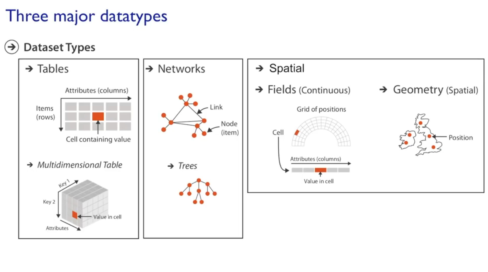
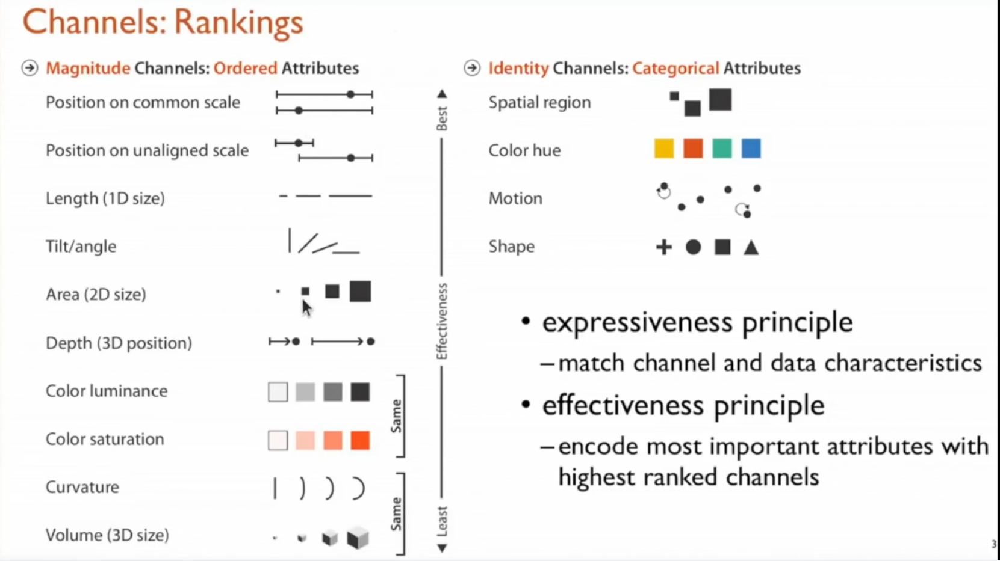
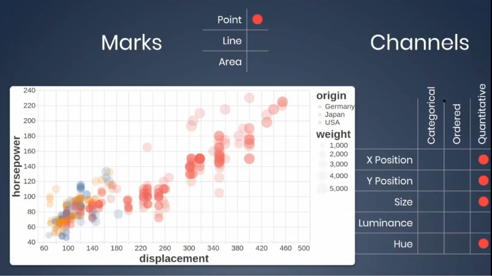

| Tema | Descripcion | Imagenes |
|---|---|---|
| INPUTS: Data and Tasks |
Data types:
- Tables: ademas de las tablas comunes existe tablas multidimensionales que representan datos agregados
(GROUP BY).
- Networks: Los datos en arbol son un subtipo de network, aunque no necesariamente tienen relacion directa
- Spatial: Datos que pueden ser representados en un espacio (datos por ubicacion en un mapa, votos en un
congreso, etc)
Atribute types:
- Categorical: Son atributos diferentes entre si pero que no tienen un orden natural entre ellos (paises,
colores). No es posible asegurar que uno viene antes o despues del otro.
- Ordinal: valores diferentes pero con un orden natural entre ellos. Por ej: tamaño porque se puede
asegurar que despues de pequeño viene mediano y luego grande.
- Quantitative: normalmente involucra numeros, un valor cuantitativo a diferencia de los anteriores que
son valores cualitativos. Aca al tratarse de numeros hay un orden especifico para cada dato.
- Casos Especiales: son datos que son de naturaleza quantitative pero pueden ser representados como
ordinal o categorical (ver imagen). Al hablar de una ubicacion, si no se representa en un mapa, entonces
se puede representar como categorical porque no existiria un orden natural entre los datos. Al igual
cantidad o tiempo, si se toman como un rango, pueden ser representados como ordinal porque no serian
valores especificos pero seguirian teniendo un orden natural.
Tasks:
En pocas palabras es el objetivo que quieres lograr con la visualizacion. Al menos deberias tener una idea
de lo que quieres y responder las siguientes preguntas puede servir de guia:
- What questions do you want to answer?
- What is the problem you are trying t solve?
- What decision are you trying to make?
- What outcomes are you hoping for?
- What story do you want to tell?
- What tasks should the viewer be able to perform?
|
 |
| MARKS AND CAHNNELS |
Marks:
- Point: los datos son representados por puntos
- Line: los datos son representados por una linea continua
- Area: los datos son representados igual que en Line pero con el area debajo de la linea llena con un
color (normalmente solido)
Channels:
- Position: normalmente representa en donde se encuentra el dato segun los ejes X y Y. Es muy común usar
el eje X para representar datos del tiempo o la duracion como datos quantitative pero siempre es
recomendable inicialmente experimentar con combinaciones de los attribute types (categorical, ordinal o
quantitative) para ver que posibilidades hay con los datos que se tienen.
- Color: Se puede dividir en tres:
Hue: el color como tal. Se recomienda usarlo para datos Categorical ya que un
color no representa un orden especifico (por ej: verde no viene naturalmente antes o despues de rojo).
Saturation: No explica como este valor afecta la representacion de los datos
Luminance: el brillo del color. Se recomienda usarlo para datos quantitative
porque permite mostrar una escala de mas claro a mas oscuro que solo tendria sentido con datos que tengan
un orden natural.
- Size: se refiere al tamaño de la representacion de cada dato, si se usan puntos, entonces el valor mas
grande debe tener un Size mayor para representarlo.
- Shape: muy similar a Size. Util para datos ordinal o categorical
En el grafico de ejemplo se puede ver el uso de Size para resaltar las diferencias de peso (weight) entre
los distintos vehiculos. Tambien se usa el Hue o color para representar el pais de origen (origin)
aprovechando ademas un efecto de transparencia para resaltar la densidad de datos en cada zona del
grafico.
|
A la izquierda los que son mas utiles para representar atributos ordinal o quantitative.
A la derecha los que son mas utiles para representar atributo categorical


|